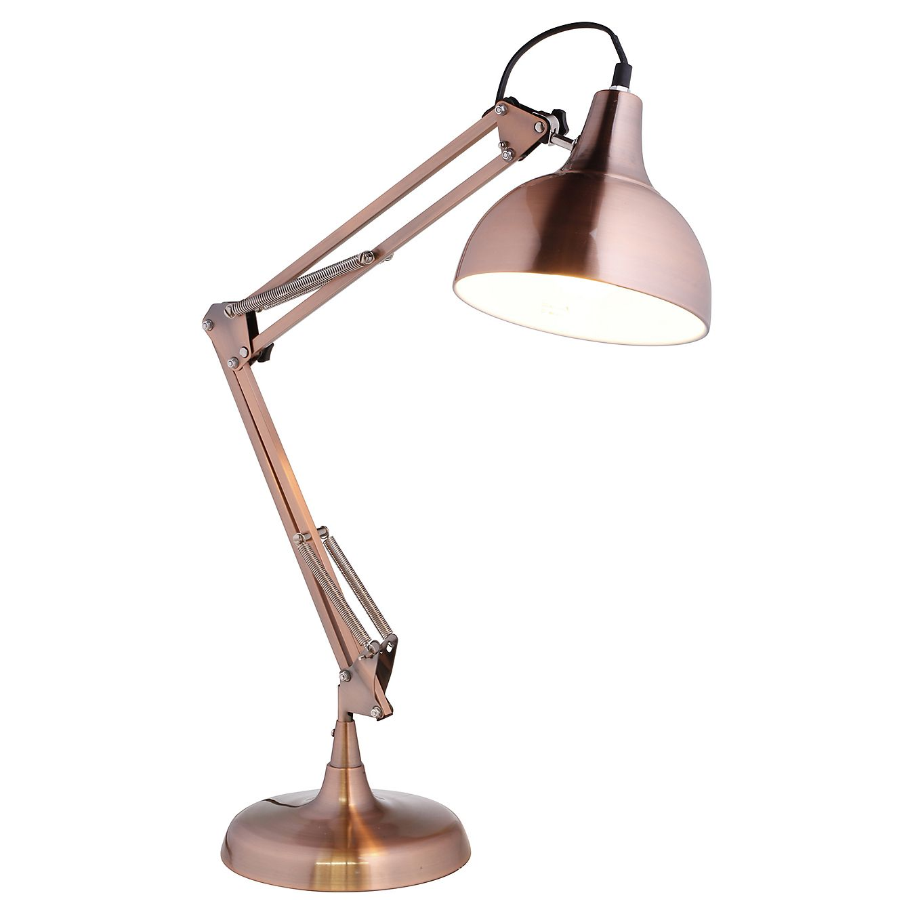
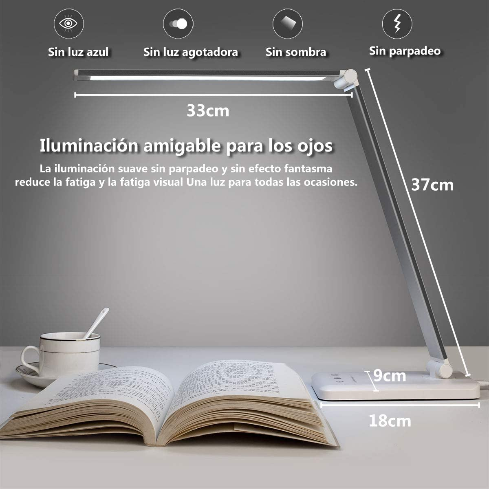
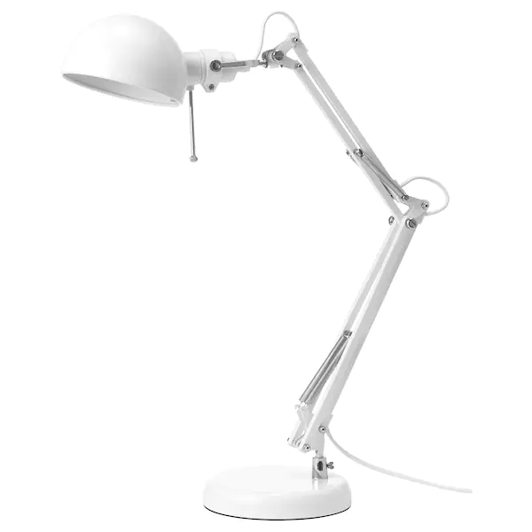
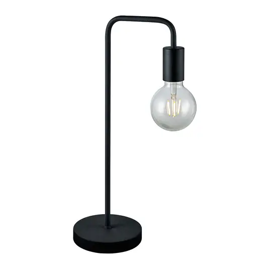

Este tipo de lámparas son ideales para estudiar o trabajar ya sea en ordenador o en libro. Pero no todas son iguales, hay muchos modelos y colores además de sus tecnologías, ya que algunas les puedes cambiar incluso el color de la luz que emiten.
Esta lámpara es de Amazon y cuesta aproximadamente 25 euros, es una lámpara muy moderna, ya que contiene un estilo muy peculiar y es táctil. Esta lámpara contiene 50 opciones de luz ajustables además de otras cualidades de esta lámpara como su capacidad de producir luz sin sombra o que incluye una bombilla led integrada.
Esta lámpara es de Ikea una tienda de muebles y cuesta 15 euros, es una lámpara bastante moderna y muy sencilla de utilizar, muy recomendable para diversos tipos de usos como la lectura, escritura entre muchos otros. Bombilla no incluida, pulsa en la imagen para ver el producto.
Esta lámpara está hecha de acero y revestimiento en polvo con lo cuál la mejor forma de limpiar la lámpara es con un paño humedecido de detergente y luego secar-lo con un paño seco.
Esta lámpara de color negro mate es bastante diferente a las otras, ya que se utiliza más en la decoración, ya que contiene un estilo muy peculiar y moderno. Esta lámpara está disponible en dos colores en negro mate y blanco mate lo malo de esta lámpara es que no tiene bombilla incluida aún que en su página se pueden incluir bombillas por menos de 10 euros cada una.
Esta lámpara actualmente cuesta 22,90 euros sin incluir la bombilla además la lámpara contiene un rembolso de 60 días y un envío a cualquier lugar de España gratuito.
La eficiencia energética: Las lámparas normalmente sn leds es decir no consumen mucha energía y además son amigables con el medio ambiente.
Fuente de luz estable: Esto significa que una lámpara puede provocar daño a la vista y gracias a las nuevas tecnologías en la mayoría de lámparas de escritorio o mesa no ocurre lo mismo.
El precio: Muchas lámparas son solamente compatibles con leds por eso te obligan a gastar bastante dinero en un led, ya que son más caros que las bombillas.
La debilidad: Cuando estás mucho tiempo con una lámpara encendida si acercas la mano a la bombilla notaras que está en una temperatura bastante elevada, si la bombilla supera los 65 grados se suele estropear lo que hace que su tiempo de vida disminuya.
La limitación de cable: Cuando quieres una lámpara de escritorio o de mesa tienes que tener en cuenta que el cable no es infinito, eso quiere decir que si tienes un enchufe muy lejos lo más probable es que el cable sea demasiado corto.